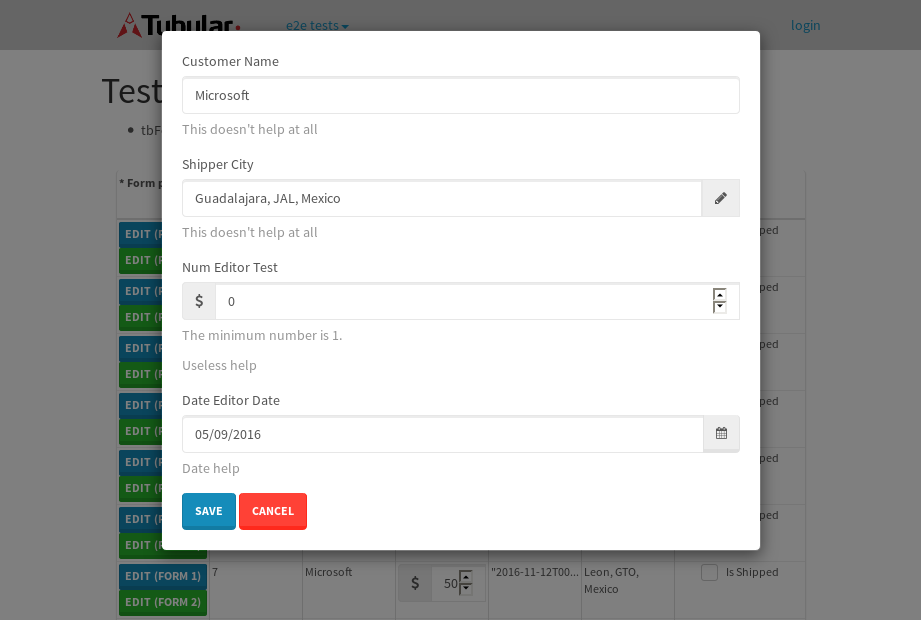
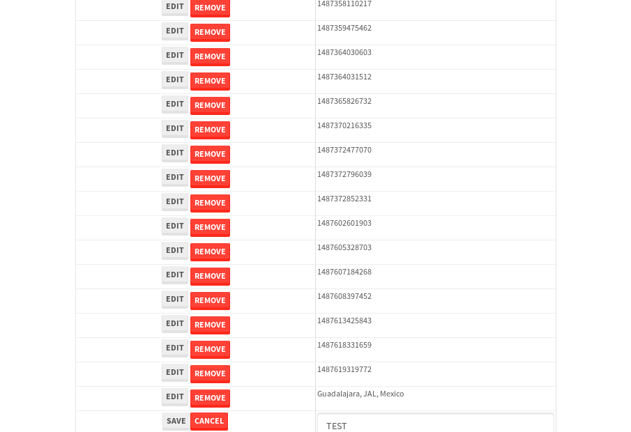

tbColumn.Grid Sorting - 25.989sTests: 5Skipped: 0Failures: 0 should sort data in ascending order then on descending order when sorting by Order Id column - 5.217sTests passed: 100.00%should order data in ascending order when click-sorting an unsorted text column - 4.774sTests passed: 100.00%should order data in descending order when click-sorting an ascending-sorted text column - 5.502sTests passed: 100.00%should order data in ascending order when click-sorting an unsorted date column - 5.157sTests passed: 100.00%should order data in descending order when click-sorting twice an unsorted date column - 5.339sTests passed: 100.00%
tbColumn.Grid Components - 4.334sTests: 3Skipped: 0Failures: 0 should print grid - 1.546s***Skipped***Tests passed: 0%should export grid - 1.512s***Skipped***Tests passed: 0%should show column selector - 1.276sTests passed: 100.00%
tbSingleForm.Form validations - 3.053sTests: 2Skipped: 0Failures: 0 should have an empty required field - 1.808sTests passed: 100.00%should not be able to click on save - 1.244sTests passed: 100.00%
Tubular Filters.tbColumnFilter - 105.876sTests: 12Skipped: 0Failures: 0 should cancel filtering when clicking outside filter-popover - 9.589sTests passed: 100.00%should disable Value text-input for "None" filter - 6.539sTests passed: 100.00%should disable apply button for "None" filter - 6.441sTests passed: 100.00%should decorate popover button when showing data is being filtered for its column - 11.978sTests passed: 100.00%should correctly filter data for the "Equals" filtering option - 8.25sTests passed: 100.00%should correctly filter data for the "Not Equals" filtering option - 8.077sTests passed: 100.00%should correctly filter data for the "Contains" filtering option - 7.997sTests passed: 100.00%should correctly filter data for the "Not Contains" filtering option - 8.329sTests passed: 100.00%should correctly filter data for the "Starts With" filtering option - 7.011sTests passed: 100.00%should correctly filter data for the "Not Starts With" filtering option - 6.854sTests passed: 100.00%should correctly filter data for the "Ends With" filtering option - 6.794sTests passed: 100.00%should correctly filter data for the "Not Ends With" filtering option - 6.847sTests passed: 100.00%
Tubular Filters.tbColumnDateTimeFilter - 134.813sTests: 12Skipped: 0Failures: 0 should cancel filtering when clicking outside filter-popover - 7.356sTests passed: 100.00%should disable Value text-input for "None" filter - 6.441sTests passed: 100.00%should disable apply button for "None" filter - 6.968sTests passed: 100.00%should clear filtering when clicking on Clean button - 17.406sTests passed: 100.00%should decorate popover button when showing data is being filtered for its column - 11.861sTests passed: 100.00%should correctly filter data for the "Equals" filtering option - 6.728sTests passed: 100.00%should correctly filter data for the "Not Equals" filtering option - 7.643sTests passed: 100.00%should correctly filter data for the "Between" filtering option - 12.29sTests passed: 100.00%should correctly filter data for the "Greater-or-equal" filtering option - 11.731sTests passed: 100.00%should corretlly filter data for the "Greater" filtering option - 11.909sTests passed: 100.00%should correctly filter data for the "Less-or-equal" filtering option - 11.57sTests passed: 100.00%should correctly filter data for the "Less" filtering option - 12.211sTests passed: 100.00%
Tubular Filters.tbColumnOptionsFilter - 80.885sTests: 3Skipped: 0Failures: 0 should cancel filtering when clicking outside filter-popover - 9.195sTests passed: 100.00%should decorate popover button when showing data is being filtered for its column - 11.691sTests passed: 100.00%should filter column-elements in accordance to the selected filter when selecting a single option - 49.149sTests passed: 100.00%
Tubular Filters.tbTextSearch - 48.954sTests: 5Skipped: 0Failures: 0 min-chars is not set - 0.991sTests passed: 100.00%should filter data in searchable-column customer name to matching inputted text, starting from 3 characters - 6.822sTests passed: 100.00%should filter data in searchable-column shipper city to matching inputted text, starting from 3 characters - 12.447sTests passed: 100.00%should show clear button when there is inputted text only - 6.783sTests passed: 100.00%should clear filtering when clicking clear button - 16.496sTests passed: 100.00%
tbForm related components.tbCheckboxField - 6.274sTests: 2Skipped: 0Failures: 0 should save changes on "SAVE" - 3.143sTests passed: 100.00%should discard changes on "CANCEL" - 1.65sTests passed: 100.00%
tbForm related components.tbDropDownEditor - 11.343sTests: 5Skipped: 0Failures: 0 should set initial input value to the value of "value" attribute when defined - 2.013sTests passed: 100.00%should show the component name value in a label field when "showLabel" attribute is true - 1.937sTests passed: 100.00%should show a help field equal to this attribute, is present - 1.699sTests passed: 100.00%should submit modifications to item/server when clicking form "Save" - 2.771sTests passed: 100.00%should NOT submit modifications to item/server when clicking form "Cancel" - 2.464sTests passed: 100.00%
tbForm related components.tbTextArea - 15.374sTests: 7Skipped: 0Failures: 0 should set initial input value to the value of "value" attribute when defined - 1.855sTests passed: 100.00%should be invalidated when the number of chars is not in the range of "min" and "max" attributes - 2.054sTests passed: 100.00%should show the component name value in a label field when "showLabel" attribute is true - 1.595sTests passed: 100.00%should show a help field equal to this attribute, is present - 1.625sTests passed: 100.00%should require the field when the attribute "required" is true - 2.092sTests passed: 100.00%should submit modifications to item/server when clicking form "Save" - 2.917sTests passed: 100.00%should NOT submit modifications to item/server when clicking form "Cancel" - 2.059sTests passed: 100.00%
tbForm related components.tbDateEditor - 15.61sTests: 6Skipped: 0Failures: 2 should set initial date value to the value of "value" attribute when defined - 2.193sExpected false to be true.✗Tests passed: 0.00%should be invalidated when the date is not in the range of "min" and "max" attributes - 2.548sTests passed: 100.00%should show the component name value in a label field when "showLabel" attribute is true - 2.059sTests passed: 100.00%should show a help field equal to this attribute, is present - 2.288sTests passed: 100.00%should submit modifications to item/server when clicking form "Save" - 2.802sTests passed: 100.00%should NOT submit modifications to item/server when clicking form "Cancel" - 2.315sExpected false to be true.✗Tests passed: 0.00%
tbForm related components.tbTypeaheadEditor - 19.335sTests: 7Skipped: 0Failures: 0 should show an options list when there is an API-info/component entered-data - 2.433sTests passed: 100.00%should select the option clicked - 2.279sTests passed: 100.00%should show a "delete" button when an option/match is selected, and delete the option if button is clicked - 2.348sTests passed: 100.00%should show a label value equal to the component name when "showLabel" attribue is true - 1.832sTests passed: 100.00%should require a value when "require" attribute is true - 2.429sTests passed: 100.00%should submit modifications to item/server when clicking form "Save" - 5.345sTests passed: 100.00%should NOT submit modifications to item/server when clicking form "Cancel" - 2.09sTests passed: 100.00%
tbForm related components.tbSimpleEditor - 19.569sTests: 9Skipped: 0Failures: 0 should set initial input value to the value of "value" attribute when defined - 1.914sTests passed: 100.00%should be invalidated when the number of chars is not in the range of "min" and "max" attributes - 2.004sTests passed: 100.00%should show the component name value in a label field when "showLabel" attribute is true - 1.647sTests passed: 100.00%should set input placeholder to the value of "placeholder" attribute - 2.025sTests passed: 100.00%should validate the control using the "regex" attribute, if present - 2.103sTests passed: 100.00%should show a help field equal to this attribute, is present - 1.68sTests passed: 100.00%should require the field when the attribute "required" is true - 1.82sTests passed: 100.00%should submit modifications to item/server when clicking form "Save" - 3.04sTests passed: 100.00%should NOT submit modifications to item/server when clicking form "Cancel" - 2.342sTests passed: 100.00%
tbForm related components.tbNumericEditor - 15.896sTests: 7Skipped: 0Failures: 0 should set initial component value to the value of "value" attribute when defined - 1.741sTests passed: 100.00%should be invalidated when the entered number is not in the range of "min" and "max" attributes - 2.587sTests passed: 100.00%should show the component name value in a label field when "showLabel" attribute is true - 1.899sTests passed: 100.00%should show a help field equal to this attribute, is present - 1.978sTests passed: 100.00%should require the field when the attribute "required" is true - 1.888sTests passed: 100.00%should submit modifications to item/server when clicking form "Save" - 2.926sTests passed: 100.00%should NOT submit modifications to item/server when clicking form "Cancel" - 2.307sTests passed: 100.00%
tbForm Connection Error NoModelKey - 2.749sTests: 1Skipped: 0Failures: 0 tbForm connection error functionality - 0.597sTests passed: 100.00%
tbForm Connection Error NoServerUrl - 2.511sTests: 1Skipped: 0Failures: 0 tbForm connection error functionality - 0.447sTests passed: 100.00%
tbGridComponents - 34.092sTests: 6Skipped: 0Failures: 4 should add item with newRow method - 5.465sExpected 'EDIT REMOVE TEST' not to be 'EDIT REMOVE TEST'.✗Tests passed: 50.00%should add item with newRow method and cancel action - 1.164sTests passed: 100.00%should update item with tbSaveButton - 2.33sExpected '' to be 'TEST'.✗Tests passed: 0.00%should NOT update item on cancel Update action - 1.044sFailed: ElementNotVisibleError✗Tests passed: 0.00%should remove item with tbRemoveButton - 21.465sExpected 63 not to be 63, 'should remove the row from the table'.✗Tests passed: 50.00%should NOT remove item on cancel Remove action - 1.201sTests passed: 100.00%
tbGridPager.navigation buttons - 8.791sTests: 1Skipped: 0Failures: 0 should perform no action when clicking on the numbered navigation button corresponding to the current-showing results page - 1.226sTests passed: 100.00%
tbGridPager.navigation buttons.first/non-last results page related functionallity - 3.548sTests: 2Skipped: 0Failures: 0 should disable "first" and "previous" navigation buttons when in first results page - 1.789sTests passed: 100.00%should enable "last" and "next" navigation buttons when in a results page other than last - 1.759sTests passed: 100.00%
tbGridPager.navigation buttons.last/non-first results page related functionallity - 4.017sTests: 2Skipped: 0Failures: 0 should disable "last" and "next" navigation buttons when in last results page - 1.821sTests passed: 100.00%should enable "first" and "previous" navigation buttons when in a results page other than first - 2.196sTests passed: 100.00%
tbGridPager.page navigation - 6.834sTests: 5Skipped: 0Failures: 0 should go to next results page when clicking on next navigation button - 1.459sTests passed: 100.00%should go to previous results page when clicking on previous navigation button - 1.514sTests passed: 100.00%should go to last results page when clicking on last navigation button - 1.514sTests passed: 100.00%should go to first results page when clicking on first navigation button - 1.201sTests passed: 100.00%should go to corresponding results page when clicking on a numbered navigation button - 1.146sTests passed: 100.00%
tbGridPagerInfo - 4.626sTests: 2Skipped: 0Failures: 0 should show text in accordance to numbered of filter rows and current results-page - 1.307sTests passed: 100.00%should show count in footer - 0.496sTests passed: 100.00%
tbHttp - 17.962sTests: 8Skipped: 1Failures: 0 should be authenticated - 2.877sTests passed: 100.00%retrieve data - 2.228sTests passed: 100.00%should not login bad credentials - 2.38sTests passed: 100.00%should have a refresh token - 2.476sTests passed: 100.00%should remove authentication - 2.277sTests passed: 100.00%get method-Is not authenticated - 3.492sTests passed: 100.00%post method-Is not authenticated - 2.229sTests passed: 100.00%should regenerate access token on post - 0s***Skipped***Tests passed: 0%
tbPageSizeSelctor - 9.987sTests: 4Skipped: 0Failures: 0 should filter up to 10 data rows per page when selecting a page size of "10" - 2.63sTests passed: 100.00%should filter up to 20 data rows per page when selecting a page size of "20" - 1.846sTests passed: 100.00%should filter up to 50 data rows per page when selecting a page size of "50" - 2.352sTests passed: 100.00%should filter up to 100 data rows per page when selecting a page size of "100" - 1.715sTests passed: 100.00%
tbRowSelectable - 9.176sTests: 2Skipped: 0Failures: 0 selected rows - 4.633sTests passed: 100.00%unselected rows - 2.906sTests passed: 100.00%
tbSingleForm - 19.589sTests: 8Skipped: 0Failures: 1 should load correct info - 2.405sTests passed: 100.00%should change customer name - 2.244sTests passed: 100.00%should save it - 2.798sFailed: Element is not enabled✗Tests passed: 0.00%should clear the inputs - 2.227sTests passed: 100.00%should update - 2.675sTests passed: 100.00%should reset editor - 2.434sTests passed: 100.00%should not save if not Changes - 2.365sTests passed: 100.00%should not be able to click on save - 2.44sTests passed: 100.00%


{kind=link}
{kind=link}